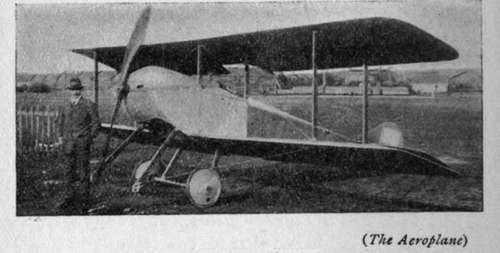

Why An Aeroplane Flies. Part 3
Description
This section is from the book "All About Flying", by Gertrude Bacon. Also available from Amazon: All About Flying.
Why An Aeroplane Flies. Part 3
Investigation reveals a curious state of affairs. Formerly it was considered that the reason why a cambered plane lifted better than a flat one was because the concave under side could grasp and force downwards a greater handful of air (if one may so describe it) and so obtain an increased support. Undoubtedly this is the case, but it is not the whole truth or even half of it. Only about one-third of the increased lift is due to the under side; the other two-thirds, wonderful as it may appear, are the result of the convex upper side. The vortex or eddies set up in the air by the rapid progress of the front of the plane cause a vacuum over the top, and the plane, if properly curved, is actually sucked upwards and forwards with a force powerful enough to have great effect upon its lifting power.
If we examine the lifting surfaces of a modern aeroplane—commonly called the planes of a biplane and the wings of a monoplane—we shall see that they are not cambered symmetrically. That is to say, the curve of the lower surface does not follow that of the upper, but there is a distinct 1 hump' near the front, or ' entering' or 'leading' edge as it is called, and a tapering away towards the rear or 'trailing' edge. Recently Mr. Howard Wright, a famous pioneer of aeroplane design, who has worked on the problem since the days when his American namesakes began their flying experiments, has evolved the 'double-cambered' plane, where the under surface is concave as usual, but the upper has two, not quite symmetrical, ' humps,' one behind the other, as if two narrow cambered planes were joined together lengthways. By this device he expected to add largely to the all-important suction action, and results have amply justified him in his belief, for he obtains a lifting power far in excess of that yielded by the most effective single-cambered plane in existence.
But in' addition carefully to shaping our planes and setting them at a well-considered angle, we have also to drive them sufficiently rapidly through the air. The support which the planes gather from the resistance of the air can only be obtained by their continually passing over fresh and undisturbed areas. The quicker they travel the more support do they find. There is more than meets the eye in that very simple answer to the question, 1 Why does an aeroplane keep up in the sky ?' 'Because it hasn't time to fall down.'
And in this rapid progress it is the entering edge of the plane which bears the brunt of the task. As the plane passes through the atmosphere the front of it enters continually upon new regions of undisturbed air which it presses down and forces into all sorts of currents and eddies. The rear part of the plane which passes over the same air immediately afterwards gets the 'back-wash' from the front, and so having only disturbed air to press on, is not able to obtain so much support from it. Therefore, as Wenham pointed out half a century ago, long narrow planes are more efficient than short broad ones ; and to increase the lifting surface of a plane you must add to its 'span' or length, and not to its 'chord' (which is the correct term for the width disregarding the camber). The proportion of the span of a plane to its chord is known as the 'aspect.
As has already been said, these long narrow planes can be made in two lengths and mounted one above the other, as a biplane, with no great loss of lifting power save a certain amount due to the fact that the planes have now four ends instead of two, and the air has ever a tendency to slip out from under them. Of course the planes must be placed at such a distance apart that the air disturbances set up by the one do not seriously affect the other. It was the Wright Brothers who first determined from experiment that the distance between the planes of a biplane—the 'gap,' as it is termed—should be same measure as the chord, and this precedent is generally adhered to.
As we have seen, an aeroplane travelling at high speed gets much more lift out of the air than one travelling slower. It does not need, therefore, if it is of similar weight, to have such large wings to support it. Other things being equal, the smaller the planes, the greater the speed. Bleriot and others before some big race have literally clipped the wings of their birds, to make them fly faster, until their machines have been likened to an engine with two visiting cards attached. The speed of an aeroplane also varies with the! angle of incidence • of the planes, for upon this, as we know, depends the amount of resistance they will offer. The speed, the weight, and the angle of incidence are all mutually dependent upon each other, so that an aeroplane of a fixed weight flies at a fixed speed at a fixed angle, and you cannot interfere with one of these things without altering another. Increase the speed without altering the weight or angle, and the aeroplane, instead of going quicker, will rise in the air ; decrease the speed alone, and it will descend.
As a matter of fact, an aeroplane in the air is continually altering its angle of incidence. The greater the speed the less the angle, and by depressing his elevator the aviator can make his wings lie flatter and flatter in the air. In early days when engines were only just powerful enough to raise their ill-designed craft from the ground, and pilots and constructors had not yet attained to present wisdom, it was held that every aeroplane had but one flying speed which could be varied only within very small limits. Nowadays, with carefully cambered wings, well-considered construction, and powerful engine with plenty of reserve horse-power, the aviator finds he can vary his speed 50 per cent, and over. A 36 to 92 miles per hour Sopwith biplane can fly as fast as 92 miles an hour, and as slow as 36. An Avro can range from 83 to 83 miles per hour miles to 30. Moreover in the most efficient machines the variation is brought about simply by throttling down the engine. The 'Wight' sea-plane, for instance, with the double-cambered planes already referred to, can be varied in speed from 80 miles an hour to 36 without even touching the elevator; driven, in fact, precisely as if it were a motor-car. The explanation is that the carefully cambered wings are efficient over so large a surface that the effect is the same as that obtained by varying the angle with the elevator.
'Sopwith ' Scout.
Continue to: